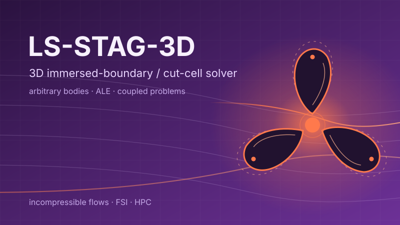
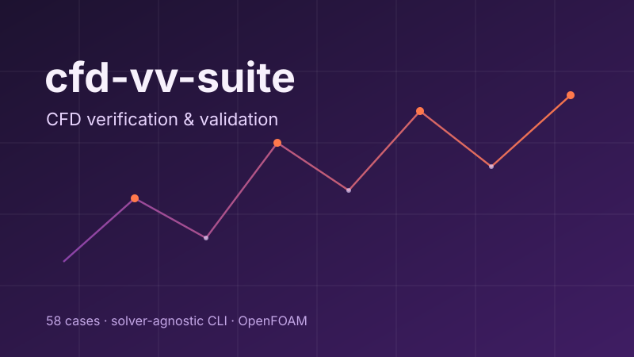
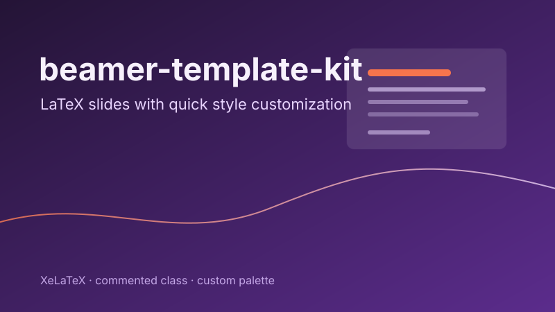
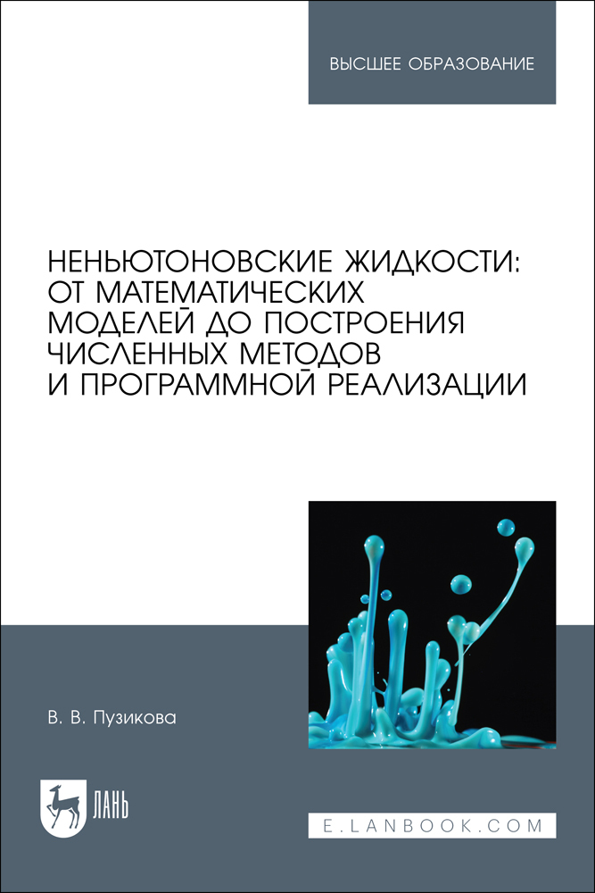
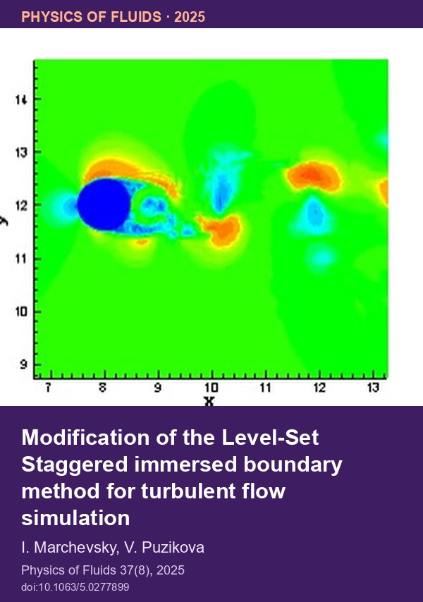
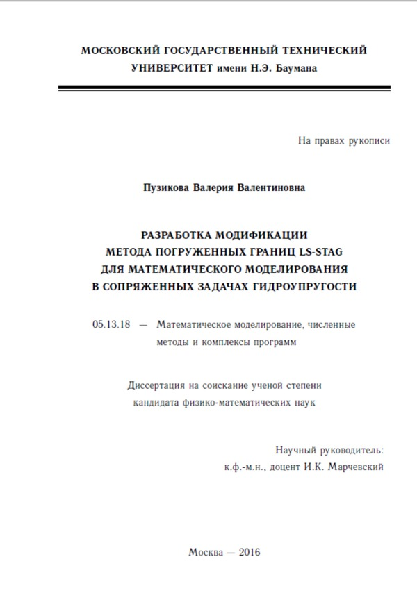
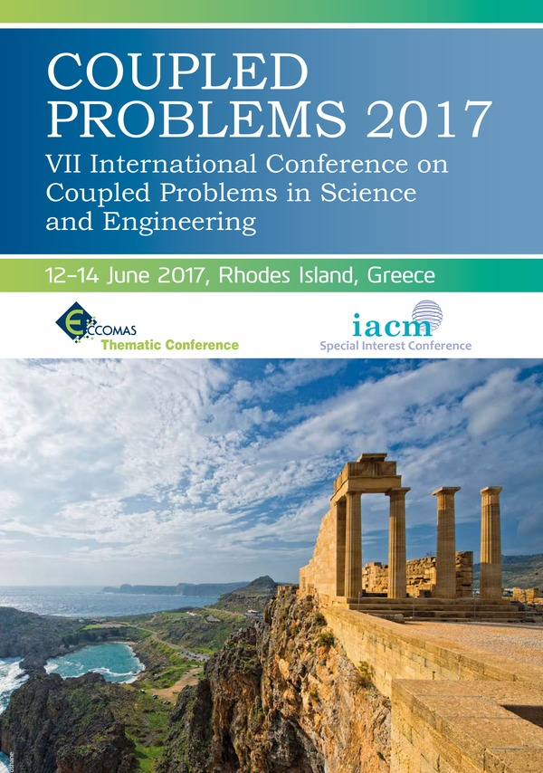
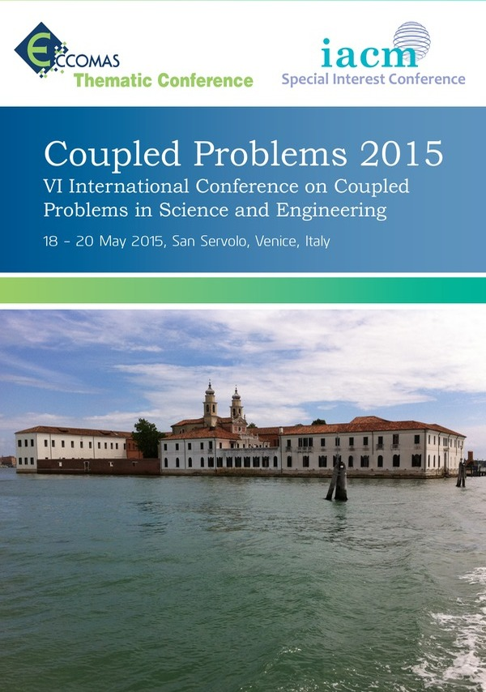

Valeria Puzikova
CFD researcher and software developer with 15+ years of experience
Currently, I lead a team developing high-performance libraries for computation and data processing. Previously, I worked on physics engines at Huawei Moscow Research Center, on immersed-boundary methods at the Ivannikov Institute for System Programming RAS, and in industry at Fortum and other companies. I hold a PhD in Physics and Mathematics from Bauman Moscow State Technical University, where I also taught optimization methods and core undergraduate mathematics. I have authored 50+ papers, a textbook on non-Newtonian fluids, and 14 registered software programs.
Research profiles
Contact & social
Research interests
CFD methods
Linear solvers & HPC
Applications & systems
Open to collaboration on CFD methods, solvers, verification & validation.
Featured projects
|
 LS-STAG-3D 3D immersed-boundary / cut-cell solver for incompressible flows with arbitrary moving bodies and coupled FSI problems. Code: |
 cfd-vv-suite Open test suite for CFD verification and validation: 58 cases, solver-agnostic CLI, OpenFOAM integration. Learn more → |
 beamer-template-kit Commented LaTeX Beamer class with a custom palette and quick style customization. Learn more → |
Featured publications
|
 Non-Newtonian Fluids: From Mathematical Models to the Construction of Numerical Methods and Software Implementation Lan, 2026. 132 p. (in Russian). |
 Modification of the Level-Set Staggered immersed boundary method for turbulent flow simulation Physics of Fluids, 2025, vol. 37, issue 8, pp. 85–118. |
 Development of a Modification of the LS-STAG Immersed Boundary Method for Mathematical Simulation in Coupled Hydroelastic Problems PhD thesis, BMSTU, 2016. 150 p. (in Russian). |
Featured SciVis
|
Autorotating propeller 3D case · velocity field |
Rotationally oscillating body 3D case · velocity field |
Vertical oscillation, Se/St = 1.1 3D case · velocity field |
Featured Conferences
|
ICCES2025 Changsha, China · May 25–29, 2025 |
 COUPLED PROBLEMS 2017 Rhodes, Greece · June 12–14, 2017 |
 COUPLED PROBLEMS 2015 Venice, Italy · May 18–20, 2015 Conference · Paper 1 · Paper 2 |
Awards and grants
- RSF grant 17-79-20445 — Efficient numerical methods for unsteady aerodynamic/hydrodynamic loads (2017–2022; participant).
- Huawei Moscow Research Center President Award (2021).
- RFBR grant 18-31-20051 — Vortex methods and coupled hydroelasticity on multiprocessor systems (2018–2020; participant).
- RFP grant for young scientists MK-743.2018.8 — Development of a modification of the LS-STAG method for modelling non-Newtonian flows and its implementation in a parallel software package for coupled hydroelastic problems (2018–2019; PI V.V. Puzikova). eLibrary
- RFP Scholarship for young scientists and post-graduate students SP-2907.2015.5 — Development of a parallel software package for numerical solution of aerohydroelasticity coupled problems by using the LS-STAG immersed boundary method and its modifications (2015–2017).
- RFP grant for young scientists MK-5357.2015.8 — Study of the efficiency of mesh and meshless methods for mathematical modelling in two-dimensional hydroelasticity problems (2015–2016; PI V.S. Moreva; participant).
- RFP grant NSh-1432.2014.8 — Mathematical modelling of non-stationary thermomechanical processes in consolidated micro- and nanostructured materials under high-intensity physical fields (2014–2015; PI V.S. Zarubin; participant).
- Schlumberger Scholarship Award (2012–2013).
- Winner, All-Russian competition of research works of students and postgraduates in mathematical sciences (2011).